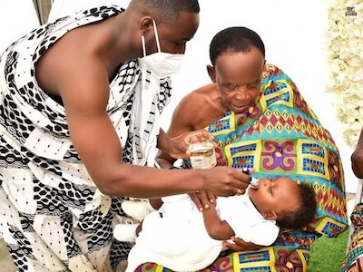
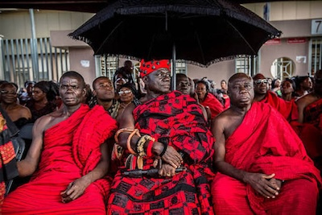

Ghanaian rites of passage
A significant Ghanaian cultural practice is their rites of passage. These are ceremonies that mark significant stages in a person’s life from birth to death
Outdooring and Naming Ceremony
In Ghana, it starts from birth with ceremonies called outdooring and naming ceremony. These rites are observed on the morning of the eighth day after a child is born.
After a child is born, the mother and child are placed in confinement until this ceremony. This rite gives the child an identity and introduces the child to the community.
Several rituals go on during the event. The most significant ritual is teaching the child right from wrong and teaching them to always speak the truth.
During this ritual, the elder or priest dips his finger into a sugar- water solution and drops it on the tongue of the baby, specks a few words and does the same with alcohol.
This rite is observed by all tribes and ethnic groups irrespective of religion.
Naming System
Another interesting Ghanaian culture is the naming system. People are sometimes named by the situations and circumstances surrounding their birth. They are also named based on the day of the week they were born on. Aside these names, Ghanaian are given traditional names from their ethnic origins. A Ghanaian can also be named by their position in the family.
Puberty Rites
The next rite of passage observed in Ghana is puberty rite. This rite of passage marks the transition of a Ghanaian from childhood to adulthood.
The most popular rite of passage observed in Ghana is “Dipo” which is celebrated by the Krobos in the eastern region of Ghana. Other rites of passage observed in Ghana include Bragoro among the Akans, otufo among the Ga-Adangmes and gbɔtowɔwɔ among the Ewes. A girl going through any of these rites signifies her readiness for marriage.
Marriage Rites
The next rite of passage is marriage. Marriage in Ghana involves a lot of steps and may take days or even months of planning and coordination to come together.
The first step in a Ghanaian marriage ceremony in “Knocking” or introduction. After a man decides his bride, he goes with the elders in his family to the ladies’ father’s house at the crack of dawn bearing gifts to ask for her hand in marriage. The woman’s opinion on the union is sought. If she agrees to the proposal, other marriage rites commence. The man and his family are given a wedding list known as bride price.
The list includes gifts for the bride, her parents and other family members. It is thought that the woman provides valuable services in her father’s home, so the groom needs to compensate for the loss.
The others in the family are also compensated as it is perceived that they took care of the woman. Ones everything on the list has been purchased, it is presented to the bride’s family and if accepted, the traditional marriage rites are observed.
Funeral Rites
The final rite observed by Ghanaians is funeral rites. This rite is observed to celebrate the life of the dead and to help transition the deceased into the afterlife. Black, dark brown and red are worn for most funerals. However, white is worn during the funeral of an elderly person who died peacefully.
Ghanaian funeral ceremonies can span several days with many months of preparation.


